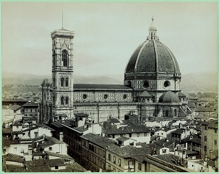
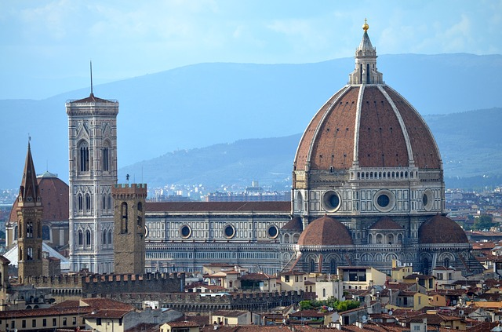
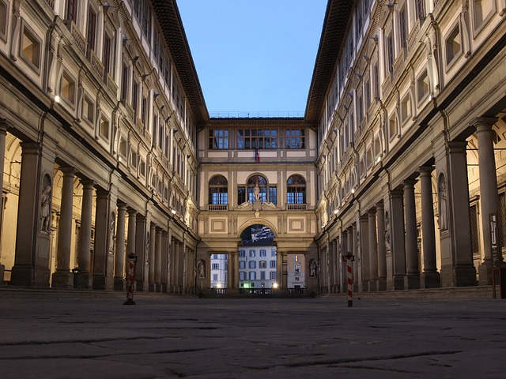
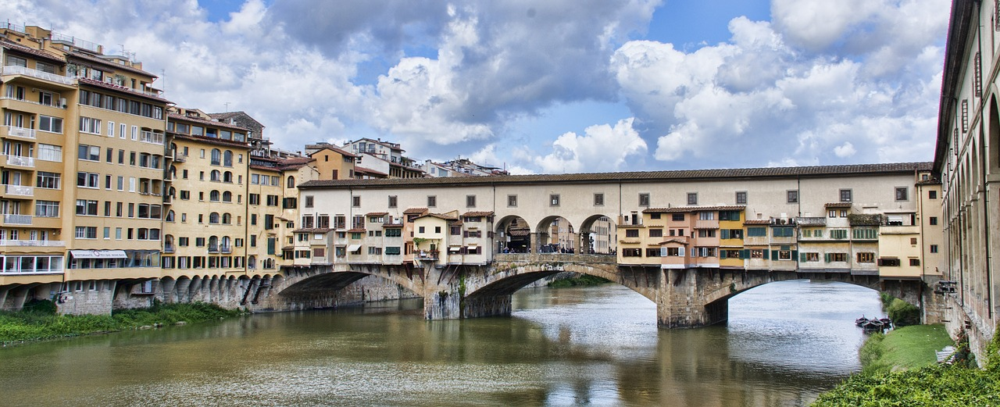

Kathedrale Santa Maria del Fiore
Mit seiner typischen Architektur der italienischen Gotik geht der Dom von Florenz, welcher der „S. Maria del Fiore" (Hl. Maria der Blume) geweiht ist, auf einen anfänglichen Entwurf von Arnolfo di Cambio (ca. 1245 - 1302) zurück, der das bereits bestehende Kirchengebäude durch eine beträchtliche Ausdehnung der Strukturen umbaute. Als der Bau um 1367 abgeschlossen war, wurde der Dom nach dem Muster des noch älteren Baptisteriums mit buntem Marmor verkleidet, mit Ausnahme der Fassade, die unvollendet blieb und ihr heutiges Aussehen erst im 19. Jh. erhielt.
Der Bau der Kuppel stand noch aus, von der im Jahre 1421 lediglich die Trommel (die polygonale Basis) fertiggestellt war. Aus dem hierzu unter den Architekten ausgeschriebenen Wettbewerb gingen Lorenzo Ghiberti (1368 - 1445) und Filippo Brunelleschi (1377 - 1446) als Sieger hervor, doch der endgültige Entwurf ist letzterem zu verdanken, wie auch die außerordentliche Technik, mit der die riesige Struktur angehoben wurde und 1436 zur Fertigstellung führte.
Außenseitig sei neben dem besonders gegliederten Bereich der Apsiden, vor allem auch auf das schöne Nordtor „della Mandorla“ (der Mandel) hingewiesen, das diesen Beinamen aufgrund des großen Heiligenschreins erhielt, der die Figur der heiligen Jungfrau umgibt, zu deren Gestaltung auch der Bildhauer Nanni di Banco (1380/90 - 1421) mitwirkte.
Im Innenraum sind einige hoch bedeutende Kunstwerke zu sehen, allen voran, auf der linken Wand, die beiden abgelösten Fresken, auf denen die Reitermonumente der Feldherren Giovanni Acuto und Niccolò da Tolentino  dargestellt sind, die von Paolo Uccello im Jahre 1436 bzw. von Andrea del Castagno im Jahre 1456 geschaffen wurden. Ebenfalls Paolo Uccello zu verdanken ist der Freskenschmuck der Uhr auf der Innenseite der Fassade, mit 4 kräftigen „teste di Santi“ (Heiligenköpfen).
Von den Skulpturen, die für den Dom angefertigt wurden (und von denen viele aus Gründen der Erhaltung in das Museum der Werke des Doms verlegt wurden) sind noch die „Lunette“ (Lünetten) von Luca della Robbia über den Sakristeientoren der Messen zu sehen. Entfernt wurde hingegen die großartige „Pietà“ von Michelangelo (ca. 1553), die im Museum der Werke des Doms aufbewahrt wird.
Beachtung verdienen auch die herrlichen Kirchenfenster, die größtenteils zwischen 1434 und 1455 nach Entwürfen bedeutender Künstler wie Donatello, Andrea del Castagno und Paolo Uccello gefertigt wurden; ferner die Intarsien (Einlegearbeiten) an den Schränken der Sakristei, deren Entwurf von Brunelleschi selbst sowie von anderen Künstlern wie Antonio del Pollaiolo stammt.
Die Innenwand der Kuppel erhielt ihren Freskenschmuck zwischen 1572 und 1579 von Giorgio Vasari (1511-1574) und von Federico Zuccari (ca. 11310-1609) mit einem großen „Giudizio Universale“ (Jüngsten Gericht).
Mindestens ebenso charakteristisch für das Stadtbild von Florenz wie die „Cupolone“ (riesige Kuppel) von Brunelleschi ist der Glockenturm, der weltweit als „Campanile di Giotto“ bekannt ist. Von dem großen Maler und Architekten Giotto stammte nämlich der Entwurf, auch wenn bei seinem Tode (1337) erst der unterste Anschnitt abgeschlossen war. Die Arbeiten wurden unter der Leitung von Andrea Pisano (ca. 1290 - ca. 1349) fortgeführt sowie unter Francesco Talenti (urkundlich nachweisbar 1325 - 1369), der das Werk schließlich zu Ende führte.
Die Galerie der Uffizien
Die Uffizien (erbaut von 1560-1580), ursprünglich erbaut zur Unterbringung der Ämter von Magistraten, Richtern und Händlern, wurden auf Wunsch der herrschenden Medici-Familie in eine private Gemäldesammlung umgewandelt. Neben den Gemälden, Statuen, Schmuck und wissenschaftlichen Geräten, wurden auch Waffen ausgestellt, was aus der Galerie eine der interessantesten Kunstsammlungen der Welt machte. 1865 wurde aus den Uffizien ein Museum, das heute über 50 Säle verteilt Gemälde aus allen Epochen vom 13. bis 18. Jahrhundert beherbergt.
Zu den bekanntesten Werken, die sich in den Uffizien befinden, zählen die berühmte „thronende Madonna“ von Giotto, die „Schlacht von San Romano“ von Paolo Uccello, das Diptychon „Federico da Montefeltro“ von Piero della Francesca, „Die Geburt der Venus“ von Botticelli. Darüber hinaus beherbergt das Museum drei Werke von Leonardo da Vinci, eines von Michelangelo, einige aus Raffaels Hand sowie mehrere von Tizian und Caravaggio. Alle Werke sind chronologisch ausgestellt, so dass man die Entwicklungen in der Kunst Schritt für Schritt nachverfolgen kann.
Ponte Vecchio
Die Ponte Vecchio (übersetzt: Alte Brücke) ist, neben der Rialtobrücke in Venedig, die wohl berühmteste Brücke in Italien und nach einigen Quellen die bekannteste Brücke der Welt. Das Bauwerk ist ein Wahrzeichen von Florenz.
Die Brücke Ponte Vecchio verbindet die Innenstadt von Florenz mit den Stadtteilen auf der anderen Seite des Flusses Arno. Auf der Brücke hat man wegen der Läden links und rechts das Gefühl in eine normalen Straße zu sein. Nur in der Mitte der Brücke ist die Ladenzeile für einige Meter unterbrochen. Von hier hat man einen wunderschönen Ausblick auf den Arno mit einigen anderen alten Brücken. Ein idealer Platz zum fotografieren. Eine Statue zeigt den wichtigsten Goldschmied in der Geschichte der Ponte Vecchio Florenz Benuto Cellini.
Auf den wenigen Metern auf der Ponte Vecchio mit freiem Blick herrscht stets großes Gedränge. Hunderte Touristen, viele davon aus Asien, wollen Fotos und Selfies machen. In China, Japan und Süd-Korea scheint die alte Brücke in Florenz noch berühmter zu sein als in Europa.
Es gibt auf der berühmtesten Brücke der Erde Ponte Vecchio etwa 20 Geschäfte. Fast alle sind Juweliere. Besonders hochwertiger Schmuck aus Gold und Silber wird angeboten. Die Preise vieler Schmuckstücke in den Schaufenstern sind 4-stellig, manche sind sogar noch teurer. Einige Läden verkaufen auch Armbanduhren, besonders erstklassige Marken mit hohen Preisen wie Uhren aus der Schweiz wie Rolex.
Die Ponte Vecchio in Florenz ist eine der ältesten Brücken der Welt, die in der Segmentbogen-Technik erbaut wurden. Vermutlich im Jahr 1333 wurde eine andere Brücke aus Holz an dieser Stelle durch ein Hochwasser zerstört. Danach wurde die heutige Steinbrücke gebaut. Die Eröffnung der Ponte Vecchio war im Jahr 1345. Schon damals gab es die kleinen Läden auf dem Bauwerk über den Fluss Arno. Am Anfang waren in den meisten Geschäften Metzgereien. Dem Herzog Medici Cosimo I vertrieb die Schlachter im Jahr 1558, die ihren stinkenden Abfall in den Arno warfen, aus den Brückenläden. Danach zogen Goldschmiede und Silberschmiede in die Geschäfte auf der berühmtesten Brücke der Welt ein. Bis heute hat sich das nicht verändert.